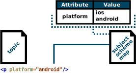

Subject Scheme
The Subject Scheme Map is a specialized DITA Map that defines allowed attribute values.
Sample project: subjectScheme.zip
map.ditamap
The map.ditamap references the Subject Scheme Map subjectScheme.ditamap. The attributes values are mapped with keys and are therefore available in all topics of the map.ditamap.
<?xml version="1.0" encoding="UTF-8"?> <!DOCTYPE map PUBLIC "-//OASIS//DTD DITA Map//EN" "map.dtd"> <map> <title>Subject Scheme Map Example</title> <topicref href="topic.dita"/> <mapref href="subjectScheme.ditamap"/> </map>
subjectScheme.ditamap
The subjectScheme.ditamap defines the attribute values. An
attribute value is specified using the @keys attribute of a
<subjectdef> element. The key is then used to pull and map its
children to an attribute. In this case, in the <enumerationdef>
element, the attribute values of the os key are binded to the attribute
@platform
<?xml version="1.0" encoding="UTF-8"?> <!DOCTYPE subjectScheme PUBLIC "-//OASIS//DTD DITA Subject Scheme Map//EN" "subjectScheme.dtd"> <subjectScheme> <!-- The key "os" is the top level attribute value --> <subjectdef keys="os" navtitle="Operating system"> <subjectdef keys="android" navtitle="Android"> <subjectdef keys="android5" navtitle="Android 5 Lollipop"/> <subjectdef keys="android6" navtitle="Android 6 Marshmallow"/> <subjectdef keys="android7" navtitle="Android 7 Nougat"/> </subjectdef> <subjectdef keys="ios" navtitle="iOS"> <subjectdef keys="ios8" navtitle="iOS 8 Donner"/> <subjectdef keys="ios9" navtitle="iOS 9 Eagle"/> <subjectdef keys="ios10" navtitle="iOS 10 Whitetail"/> </subjectdef> <subjectdef keys="windows" navtitle="Windows"> <subjectdef keys="windows7" navtitle="Windows 7"/> <subjectdef keys="windows8" navtitle="Windows 8"/> <subjectdef keys="windows10" navtitle="Windows 10"/> </subjectdef> </subjectdef> <!-- The <enumerationdef> element binds the values of the "os" key to the attribute "platform" --> <enumerationdef> <attributedef name="platform"/> <subjectdef keyref="os"/> </enumerationdef> </subjectScheme>
topic.dita
If the topic.dita is opened in the scope of the
map.ditamap map, the values for the @platform attribute
are pulled from the Subject Scheme Map.
<?xml version="1.0" encoding="UTF-8"?> <!DOCTYPE topic PUBLIC "-//OASIS//DTD DITA Topic//EN" "topic.dtd"> <topic id="topic"> <title>topic</title> <body> <p platform="android7"/> </body> </topic>